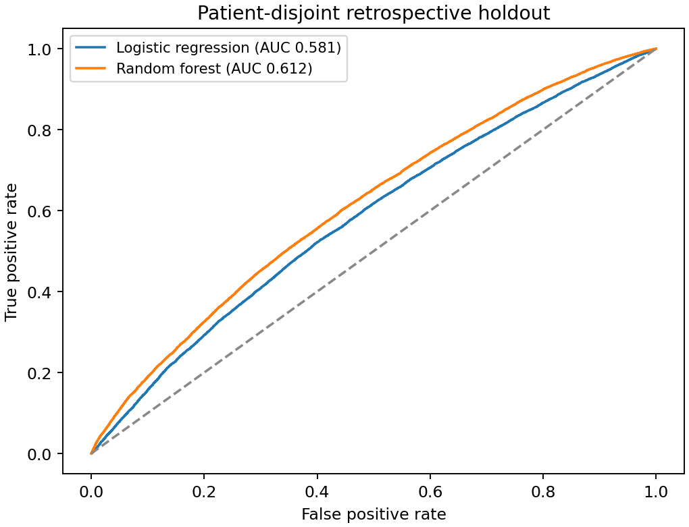

Question
How well do demographics, laboratory measurements, and recorded vital signs classify ICU stays lasting at least two days?
Findings
In a revised patient-grouped holdout, random forest ROC-AUC was 0.612 and logistic regression ROC-AUC was 0.581. The test set contained 47,151 stays from 32,678 patients. These are new fixed-parameter benchmarks, not the original tuned-model results.

Methods and revision
Replaced a row-wise split with a patient-grouped split: the original split shared 10,058 patients across sets; the revision shares zero. Added numeric scaling and unknown-category handling. Preprocessing is fitted only on training data. Original XGBoost tuning and the original Dash interface are not claimed as rerun.
Limits
This is retrospective classification. The source extraction takes the earliest available vital sign anywhere in the ICU stay, rather than enforcing a prediction-time window. Labs have no bounded lookback and are linked by patient rather than admission. These features do not support a prospective admission-time prediction claim. The source uses anchor age rather than admission-specific age and groups categories before splitting. No external or temporal validation was performed.
Run the analysis
python train.py --data data/mimiciv_icu_cohort.parquet --output resultsRequires credentialed MIMIC-IV access and a locally prepared cohort. Keep the cohort and any fitted models outside the public repository. The extraction notebook documents the original MIMIC-IV 3.1 queries; it does not repair the feature-time limitations above. BigQuery execution can incur charges.